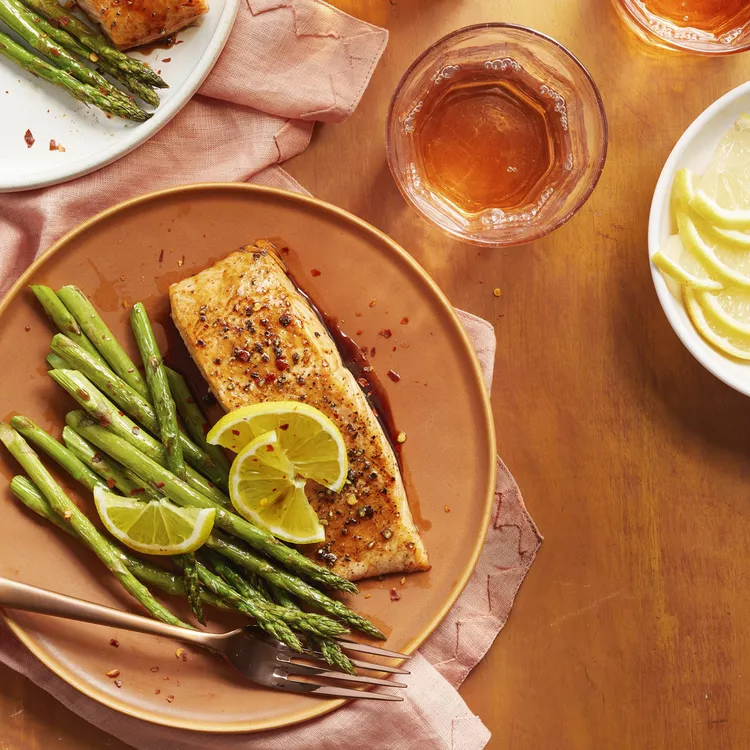

Soy Honey Glazed Salmon

This delightful dish featuring salmon, asparagus, and rice is prepared using just a handful of ingredients.
Pair it with your preferred grain and additional vegetables, if preferred.
It's effortless to double this recipe to accommodate larger families.
Ingredients
- 1 bunch fresh asparagus, trimmed, or as desired
- 1 tablespoon reduced-sodium soy sauce
- 1 tablespoon honey
- 1 teaspoon olive oil, or as needed
- 1 (8 ounce) salmon fillet
- sea salt and ground black pepper to taste
Directions
- Place a steamer insert into a saucepan and fill with water to just below the bottom of the steamer. Bring water to a boil.
Add asparagus, cover, and steam until slightly tender, 2 to 4 minutes.
- Meanwhile, whisk together soy sauce and honey in a small bowl until glaze is smooth.
- Set an oven rack about 6 inches from the heat source; preheat the oven broiler.
Line a baking sheet with aluminum foil and brush with olive oil.
- Place salmon fillet and steamed asparagus on the prepared baking sheet; season with salt and pepper.
- Cook under the preheated broiler for 5 minutes. Drizzle 2/3 of the glaze over salmon and asparagus.
Continue broiling until fish flakes easily with a fork, 3 to 5 minutes.
Drizzle remaining glaze over salmon.